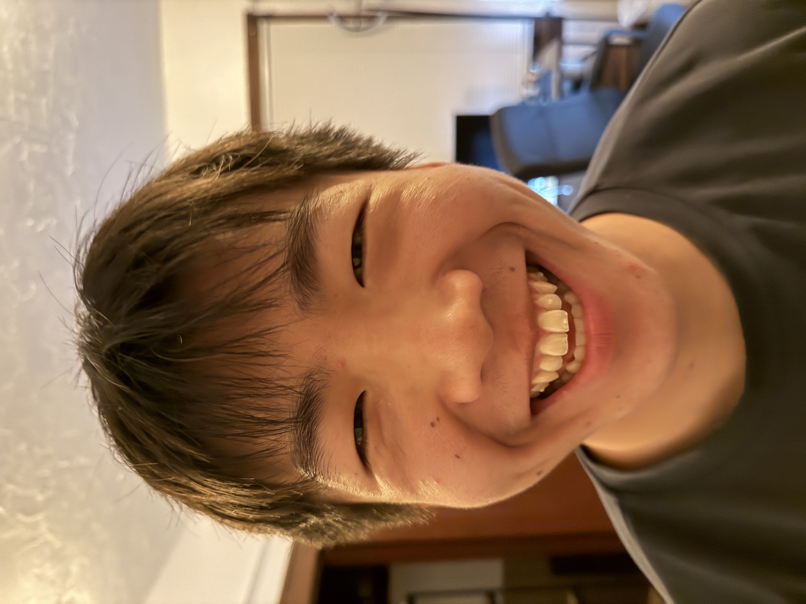
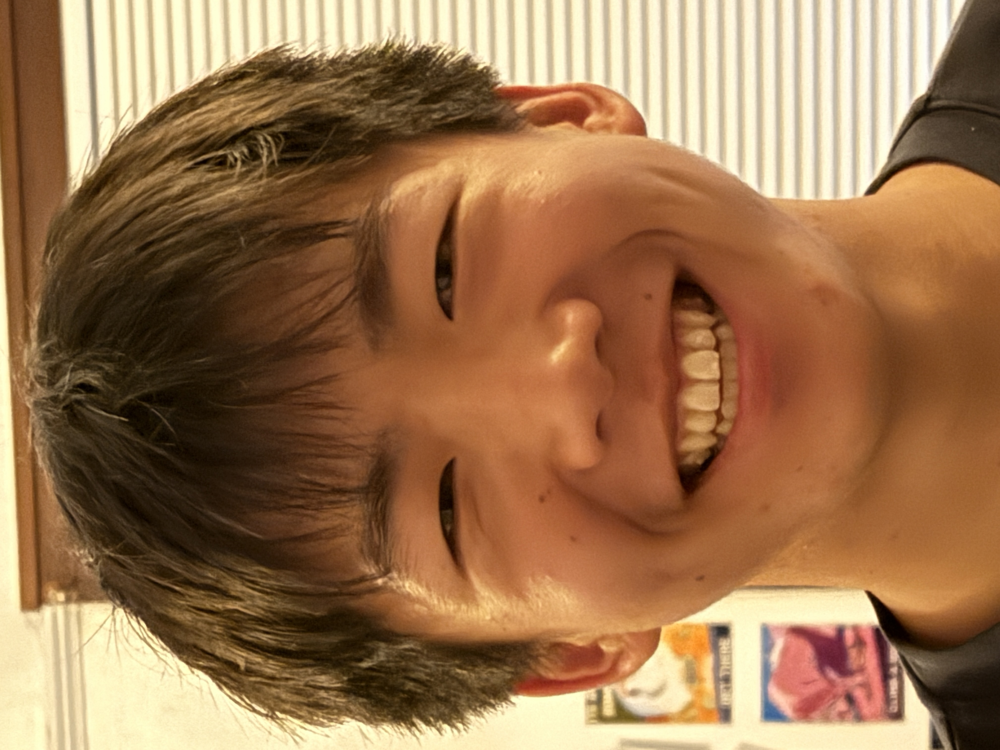
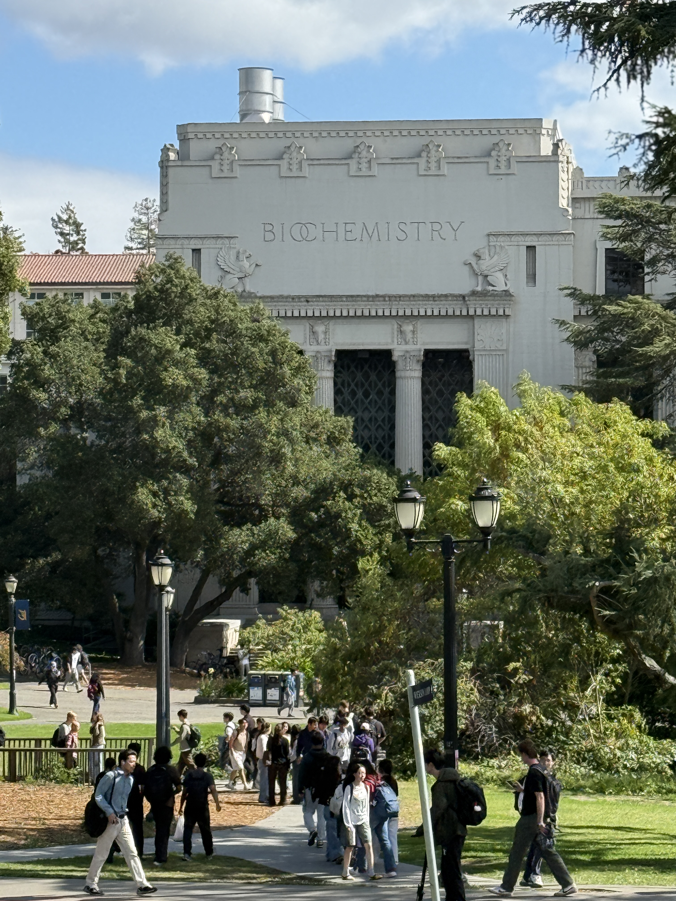
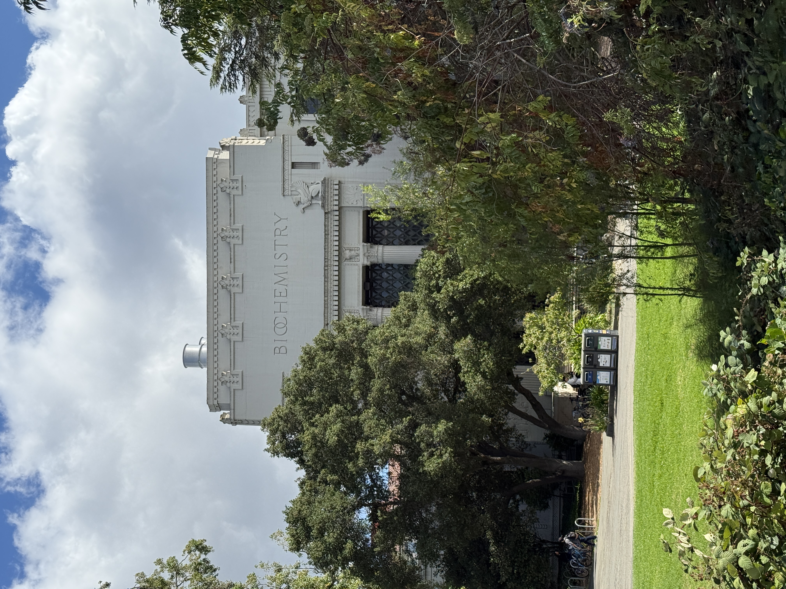
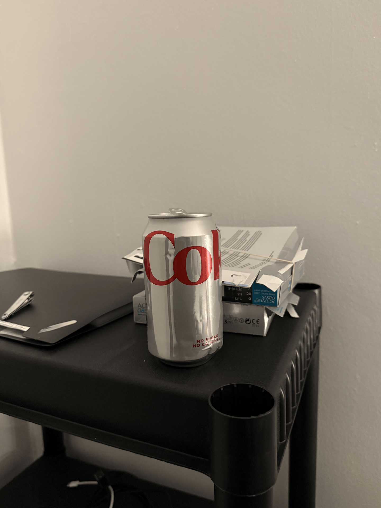

Part 1: Selfie — The Wrong Way vs. The Right Way
Describe your setup here. Then show the two photos side by side: the close-up "wrong way" shot and the stepped-back, zoomed-in "right way" shot.


I think that the second portrait looks better than the first because it is a more focused angle from further away. Zooming in effectively narrows the shot to focus on a single point whereas doing it closeup and grabbing a full view expands the FOV making it seem wider and less focused just on the face itself and disperses the focus of the shot.
Part 2: Architectural Perspective Compression
Describe the building/scene you chose. Then show the zoomed-in, far-away photo next to the close-up, no-zoom photo.


I think this happens because there is more to focus on and is more dispersed. The distance between certain things becomes less apparently relatively to where the camera is whereas close up it can make a big different. Ex: 2 ft and 3ft vs 50ft and 51ft for two objects.
Part 3: The Dolly Zoom
